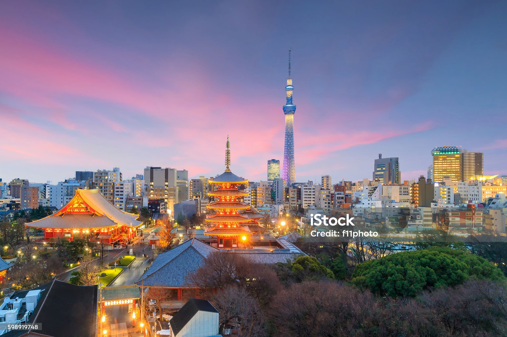
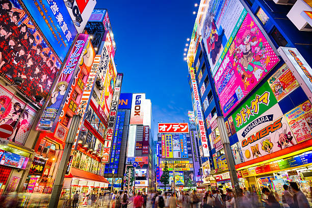

טוקיו, יפן |
|
|
טוקיו היא מטרופולין תוסס שלא נח לרגע. זה המקום שבו גורדי שחקים עצומים ומוארים בניאון צבעוני עומדים לצד מקדשים קטנים ושקטים. חציית הכביש במעבר החצייה העמוס בעולם בשיבויה (Shibuya) וביקור בשכונות התרבות הפופ כמו אקיהברה הם חוויה שאין שנייה לה בעולם. |
  |
חזרה לדף הבית |
|